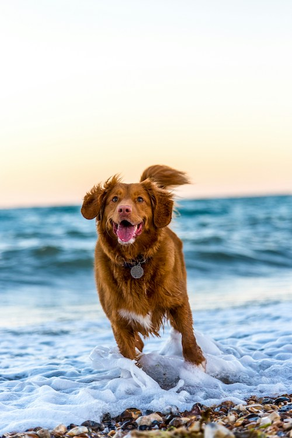

Why I prefer Dogs over Cats
I like dogs because they show alot of affection and love. A cat on the other hand, normally dosent show as much love. Dogs also are able to scare away intruders; though sometimes that might be the mailman.
Image from Oscar Sutton on Unsplash